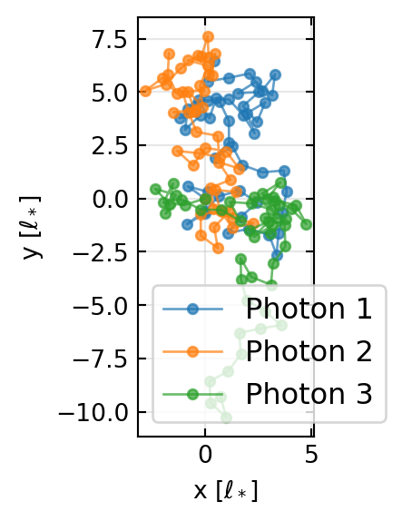
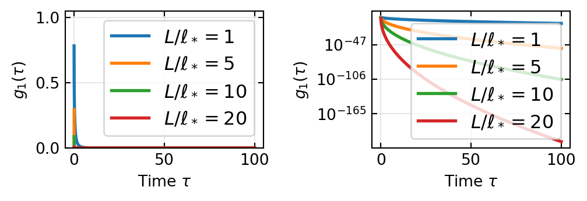

When light propagates through turbid media—biological tissue, milk, fog, strongly scattering crystals—its behavior changes fundamentally compared to ballistic propagation through clear media. Light no longer travels in straight lines; instead, it bounces randomly among countless scattering centers. This seemingly chaotic process actually obeys simple statistical laws and opens remarkable possibilities: we can image through opaque media, measure nanoscale particle motion in turbid suspensions, and even control wavefronts through disorder.
This lecture explores the bridge from microscopic scattering events to macroscopic light transport, the emergence of diffusion from random walks, and modern applications at the frontier of biophotonics and wavefront engineering.
Learning goals: By the end of this lecture, you will: - Understand when scattering becomes “multiple” and why it matters - Quantify scattering via mean free paths and the anisotropy factor - Derive and apply the diffusion approximation - Recognize and exploit speckle patterns - Appreciate diffusing wave spectroscopy (DWS) and wavefront shaping as tools for imaging and sensing
1. From Single to Multiple Scattering
The optical depth and the transition
Consider a photon entering a turbid medium. It scatters off particles at random positions. Each scattering event is characterized by a scattering mean free path\(\ell_s\)—the average distance traveled before the next collision.
After traveling distance \(z\), the probability that a photon has not been scattered is: \[P_{\text{no scatter}}(z) = e^{-z/\ell_s}\]
The optical depth (or optical thickness) is: \[\tau = \frac{L}{\ell_s}\]
where \(L\) is the characteristic length scale (e.g., thickness of a sample).
\(\tau \ll 1\) (ballistic regime): Light propagates mostly unscattered. Straight rays, sharp shadows. This is what we learn in introductory geometric optics.
\(\tau \sim 1\) (transition): Mix of scattered and unscattered light. Complex intensity patterns.
\(\tau \gg 1\) (diffusive/multiple-scattering regime): Nearly every photon scatters many times. The light has “forgotten” its initial direction and intensity fluctuations are determined by diffusion.
Example: Human skin has \(\ell_s \approx 100\text{ μm}\) at visible wavelengths, and \(L \sim 1\text{ mm}\), so \(\tau \sim 10\). This is why we cannot see through skin—multiple scattering dominates.
Mean free path and scattering coefficient
The scattering coefficient is: \[\mu_s = \frac{1}{\ell_s}\]
with units of inverse length (cm⁻¹ or m⁻¹). Similarly, the absorption coefficient\(\mu_a\) describes loss due to true absorption (conversion to heat).
The total attenuation coefficient is: \[\mu_t = \mu_s + \mu_a\]
For a beam incident on a slab of thickness \(L\): \[I(L) = I_0 e^{-\mu_t L}\]
This is the Beer–Lambert law, familiar from spectroscopy. However, this applies strictly to the unscattered (ballistic) component. Once multiple scattering is significant, photons take longer, more tortuous paths, and the total transmitted light is not simply \(e^{-\mu_t L}\).
2. Scattering Mean Free Path and the Anisotropy Factor
Phase function and anisotropy
A scattering event deflects the photon direction by angle \(\theta\). The phase function\(p(\theta)\) describes the angular distribution of scattered light. For many natural scatterers (cells, proteins, latex spheres), scattering is forward-peaked: most photons scatter through small angles, with a few scattered at large angles.
where the integral is normalized such that \(\int p(\theta) \sin\theta \, d\theta = 1\).
\(g = 0\): Isotropic scattering (Rayleigh scattering, spheres much smaller than \(\lambda\))
\(0 < g < 1\): Forward-peaked (typical for biological tissue; human skin has \(g \approx 0.7\)–\(0.8\))
\(g \to 1\): Nearly-forward scattering (large particles or structures)
Transport mean free path
Here is the crucial insight: the direction matters. Forward-scattered photons are only slightly deflected and carry memory of their original direction over multiple scattering events. This is useless if we want to detect a photon coming from a specific direction far from the source.
We therefore define the transport mean free path: \[\ell_* = \frac{\ell_s}{1 - g}\]
This is the distance over which a photon’s direction is randomized. For isotropic scattering (\(g=0\)), we have \(\ell_* = \ell_s\). For forward-peaked scattering (\(g \approx 0.8\)), \(\ell_* = 5 \ell_s\)—the photon must scatter about 5 times more often to lose all directional memory.
Physical interpretation: A random walk with step lengths \(\ell_s\) is “slow” to randomize if each step points mostly forward. By rescaling to an effective step length \(\ell_*\), we capture the true randomization rate, and the photon’s trajectory becomes a standard isotropic random walk on a longer scale.
3. Random Walk of Photons — The Diffusion Picture
Photon trajectories in a scattering medium
Imagine a photon entering a turbid medium at the origin at \(t=0\). After \(n\) scattering events, its position is: \[\vec{r}_n = \sum_{i=1}^n \ell_* \hat{u}_i\]
where \(\hat{u}_i\) is a random unit vector (uniformly distributed on the sphere).
This is a random walk. The mean position is \(\langle \vec{r}_n \rangle = 0\) (by isotropy), but the mean-square displacement grows: \[\langle r_n^2 \rangle = n \ell_*^2\]
After time \(t\), the number of scatterings is \(n = vt/\ell_*\) (where \(v\) is the speed of light), so: \[\langle r^2(t) \rangle = v t \ell_* = 3 D t\]
where we define the diffusion coefficient: \[D = \frac{v \ell_*}{3}\]
The factor of 1/3 arises from averaging over all directions in 3D: \(\langle v_x^2 \rangle = v^2/3\).
Diffusion equation
The probability distribution of finding a photon at position \(\vec{r}\) and time \(t\) follows the diffusion equation: \[\frac{\partial I(\vec{r}, t)}{\partial t} = D \nabla^2 I(\vec{r}, t) - \mu_a v I(\vec{r}, t) + S(\vec{r}, t)\]
where: - \(I(\vec{r}, t)\) is the radiance (or more precisely, an effective intensity) - \(D \nabla^2 I\) is the diffusive spreading - \(-\mu_a v I\) represents absorption (energy loss, proportional to local intensity) - \(S(\vec{r}, t)\) is the source term (e.g., light injected at an external source)
This is the heat equation with a sink term. It is linear, deterministic, and remarkably simple—despite the underlying chaos of individual photon trajectories.
4. Radiative Transfer Equation (Qualitative)
Before specializing to diffusion, let’s sketch the more general radiative transfer equation (RTE), which tracks the intensity in a specific direction \(\hat{u}\).
\[\frac{\partial L(\vec{r}, \hat{u}, t)}{\partial t} + c \hat{u} \cdot \nabla L = -\mu_t c L + \frac{\mu_s c}{4\pi} \int p(\hat{u}, \hat{u}') L(\vec{r}, \hat{u}', t) d\Omega' + S\]
where: - \(L(\vec{r}, \hat{u}, t)\) is the radiance (energy per unit time, unit area, unit solid angle) - \(\mu_t c L\) represents losses (scattering out of direction \(\hat{u}\)) - The integral term represents gains from scattering into direction \(\hat{u}\) from all other directions - \(S\) is a source
The RTE is exact (within single-particle approximations) but is high-dimensional and hard to solve. The diffusion approximation emerges when we assume the radiance is nearly isotropic and expand in small parameters.
5. Diffusion Approximation
Derivation from random walk
We already sketched this: in the random walk picture, a photon undergoes \(\sim L/\ell_*\) scatterings before escaping a slab of thickness \(L \gg \ell_*\). At each step, the direction is randomized. Thus, at length scales \(\gg \ell_*\), the trajectory looks diffusive.
More rigorously, one can show that the RTE, in the limit \(\mu_s \gg \mu_a\) and far from sources and boundaries (scale \(\gg \ell_*\)), reduces to the diffusion equation.
Steady state (\(\partial I / \partial t = 0\)): The diffusion equation becomes: \[D \nabla^2 I = \mu_a v I - S\]
or equivalently: \[\nabla^2 I - \frac{\mu_a v}{D} I = -\frac{S}{D}\]
This is a screened Poisson equation. In 1D, for a point source at the origin: \[I(x) \propto \frac{\exp(-x/\ell_d)}{x}\]
where the diffusion length: \[\ell_d = \sqrt{\frac{D}{\mu_a v}} = \ell_* \sqrt{\frac{1}{3 \mu_a \ell_*}}\]
is the characteristic decay length. Photons diffuse out to a distance \(\sim \ell_d\) before being absorbed.
Time-resolved (with absorption): A pulse of light injected at \(t=0\) at the origin spreads diffusively while decaying: \[I(r, t) \propto \frac{1}{(Dt)^{3/2}} \exp\left( -\frac{r^2}{4Dt} - \mu_a v t \right)\]
The pulse broadens as \(\sqrt{t}\) (diffusion) while its amplitude decays as \(\exp(-\mu_a v t)\) (absorption).
Boundary conditions
At the boundary of a scattering medium, photons cannot leave “backward” (from the physical medium into air, if air is non-scattering). This is captured by an extrapolation length condition: \[I = 0 \text{ at } z = -z_b\]
where \(z_b \approx (2/3) \ell_*\) is a characteristic distance (for no absorption at the boundary).
In practice, for a slab of thickness \(L\), the boundary conditions are applied at the top and bottom, reducing transmission slightly compared to infinite-medium predictions.
Validity of the diffusion approximation
The diffusion approximation is valid when: 1. \(L \gg \ell_*\): Sample must be in the diffusive regime 2. Far from sources: Distance \(\gg \ell_*\) from the source 3. Far from boundaries:\(\mu_a\) not too large (so diffusion dominates over absorption)
Violation: Near a source, or for thin samples with \(L \sim \ell_*\), the RTE must be used.
6. Speckle Patterns
Origin: Random interference
When light undergoes multiple scattering through an optical system (including propagation back to a detector), the electric field at the detector is a superposition of many paths: \[E(\vec{r}) = \sum_{i=1}^N E_i e^{i\phi_i}\]
where each path \(i\) contributes an amplitude \(E_i\) and phase \(\phi_i\). For a random medium, the phases are essentially random and independent (if the “coherence length” of the light is smaller than path length differences).
By the central limit theorem, \(E\) approaches a complex Gaussian with zero mean and random phase. When we measure intensity \(I = |E|^2\), the result is a random speckle pattern—bright spots (constructive interference) and dark regions (destructive interference) with seemingly chaotic spatial structure.
Speckle statistics
For fully developed speckle (many independent scattering paths, no fully unscattered component), the intensity follows a negative exponential distribution: \[P(I) = \frac{1}{\langle I \rangle} \exp\left( -\frac{I}{\langle I \rangle} \right)\]
where \(\langle I \rangle\) is the ensemble-averaged intensity.
Why? If \(E_x + i E_y\) are independent real Gaussian variables, then \(|E|^2 = E_x^2 + E_y^2\) follows an exponential (this is equivalent to the Rayleigh distribution for the amplitude \(|E|\)).
Key features: - No intensity at zero:\(P(0) = 1/\langle I \rangle\) (finite probability of complete destructive interference) - Long tail: High-intensity events are rare but possible - Variance:\(\text{var}(I) = \langle I \rangle^2\), so the speckle contrast is: \[C = \frac{\sigma_I}{\langle I \rangle} = 1\]
A perfect contrast of 1 indicates fully developed speckle.
Speckle size and correlations
The speckle size (diameter of a bright spot) is set by diffraction: \[\Delta x_{\text{speckle}} \sim \frac{\lambda}{D_{\text{eff}}}\]
where \(D_{\text{eff}}\) is an effective aperture or “illuminated area in Fourier space.”
For propagation through a scattering medium over distance \(L\), the effective Fourier-space aperture is of order \(\ell_*/\lambda\), so: \[\Delta x_{\text{speckle}} \sim \frac{\lambda L}{\ell_*}\]
Angular memory effect
A remarkable phenomenon: the speckle pattern at the output of a scattering medium is correlated with itself when the viewing direction is slightly tilted. This is the angular memory effect (or angular correlation).
The correlation range is: \[\Delta \theta \sim \frac{\lambda}{2\pi L}\]
Physical origin: All paths through the medium of length \(\sim L\) are scattered by the same disorder realization. A small tilt of the detector by \(\Delta \theta\) shifts phases by \(\sim 2\pi L \Delta \theta / \lambda\) for ballistic rays, but for diffusing rays (path lengths \(\gg L\)), this shift is “diluted,” and correlations survive.
This memory effect is exploited in wavefront shaping: it allows us to estimate the transmission matrix without fully characterizing the medium, and it underlies techniques for focusing through scattering media.
7. Diffusing Wave Spectroscopy (DWS)
Extension of DLS to multiple scattering
Dynamic Light Scattering (DLS) is a standard technique: measure the autocorrelation of scattered intensity as particles move, and extract the diffusion coefficient of the particles.
Diffusing Wave Spectroscopy (DWS) applies the same idea, but to light that has undergone multiple scattering. The scattered light itself diffuses through the medium, and particle motion causes phase changes that modulate the diffuse light.
Why is this powerful? - DLS: diffraction probe of particle motion with range \(\ell \sim \lambda / (4\pi)\) (about 10–100 nm) - DWS: effectively probes length scales up to \(\sqrt{D \tau} \sim \sqrt{\ell_* L}\) (can reach microns or millimeters!)
Electric field autocorrelation
For a time-varying scattering medium (particles moving), the electric field is no longer stationary. The normalized electric field autocorrelation is: \[g_1(\tau) = \frac{\langle E^*(t) E(t+\tau) \rangle}{|E(t)|^2}\]
For DLS, \(|g_1(\tau)| = \exp(-\tau / \tau_c)\) with a characteristic decay time related to particle motion.
For DWS in a slab with transmission geometry, multiple scattering enhances the sensitivity. A particle displacement \(\Delta r\) along a path of length \(\ell\) causes a phase shift \(\Delta \phi \sim 2\pi \Delta r / \lambda\). But a photon that has scattered \(N\) times samples many such path segments, accumulating phase shifts. The net effect: \[g_1(\tau) \propto \exp\left( -\sqrt{\frac{6\tau}{\tau_0}} \frac{L}{\ell_*} \right)\]
where \(\tau_0 \sim r_0^2 / (6 D_p)\) is related to the particle diffusion coefficient \(D_p\) and a characteristic displacement \(r_0 \sim \sqrt{\ell_* \lambda}\) (geometric mean of the transport mean free path and wavelength).
Sensitivity: The factor \(L/\ell_*\) (number of scatterings) multiplies the decay rate. For \(L = 1\text{ mm}\) and \(\ell_* = 10\text{ μm}\), this is a factor of 100. Thus DWS can detect sub-nanometer displacements in turbid media.
Applications
Rheology: Measure viscosity and elasticity of gels, emulsions, and suspensions by monitoring micro-sphere motion
Blood flow: Non-invasive measurement of blood velocity in tissues (optical coherence tomography and related techniques)
Foam dynamics: Coarsening and drainage of liquid foams
Protein aggregation: Monitor protein association without dilution
In vivo tissue: Combine DWS with near-infrared light to probe tissue perfusion and oxygenation
8. Wavefront Shaping Through Scattering Media
Transmission matrix concept
Imagine a scattering medium illuminated by an incoming wavefront (e.g., a plane wave, or a structured beam from a spatial light modulator). The light that emerges on the far side is scrambled into a random speckle pattern.
However, there is a deterministic linear relationship between the input and output: \[\vec{E}_{\text{out}} = T \cdot \vec{E}_{\text{in}}\]
where \(T\) is the transmission matrix. Each element \(T_{ij}\) connects input mode \(j\) to output mode \(i\).
For a weakly scattering medium, \(T\) is sparse and chaotic. For a strongly scattering medium, \(T\) is a dense random matrix, but it is still deterministic and invertible (as long as the medium is not absorbing and finite).
Spatial light modulator (SLM) optimization
A spatial light modulator (SLM) is a device (e.g., a liquid-crystal display) that spatially shapes the phase and/or amplitude of a beam. By adjusting the SLM, we can engineer the input wavefront to any desired pattern.
Strategy: 1. Measure (or estimate) the transmission matrix \(T\) 2. Choose a desired output field \(\vec{E}_{\text{out}}^{\text{goal}}\) (e.g., a focused spot) 3. Compute \(\vec{E}_{\text{in}} = T^{-1} \vec{E}_{\text{out}}^{\text{goal}}\) (or use an approximation like the phase conjugate of the impulse response) 4. Load \(\vec{E}_{\text{in}}\) onto the SLM 5. The medium “scrambles” \(\vec{E}_{\text{in}}\) back into the desired \(\vec{E}_{\text{out}}^{\text{goal}}\)
Focusing through opaque media
A practical goal: create a diffraction-limited focus inside or beyond an opaque scatterer.
Blind methods (no direct access to light inside the medium): - Feedback optimization: Adjust SLM phase randomly, measure intensity at a distant detector, use machine learning or genetic algorithms to find the SLM setting that maximizes intensity - Iterative wavefront shaping: Successive rounds of phase perturbation and feedback - Uses: can focus even without knowing \(T\) explicitly
Matrix methods: - Optical memory effect: Exploit the angular correlation to estimate local transmission matrix regions - Phase conjugation: Time-reverse the measured output field - Requires: access to a reference laser and detector
Time reversal and phase conjugation
Time reversal (or phase conjugation) in a linear system means flipping the sign of frequency, reversing the direction of propagation, and conjugating the field.
In a lossless scattering medium, reversing time is equivalent to reversing the roles of source and detector. A focused output becomes a plane wave at the input (reciprocally, a plane wave input becomes a focused output in the time-reversed geometry).
Mathematically: if \(T[\vec{k}]\) describes forward propagation, then time-reversed propagation uses \(T^*[-\vec{k}]\). In a reciprocal medium (no magneto-optic effects), \(T^*\) is the adjoint of \(T\).
Practical implementation: Measure the field scattered from a point source behind a scattering medium, conjugate it, and re-transmit using an SLM. The focus reconstructs at the original source location.
9. Anderson Localization of Light (Brief Outlook)
Interference in multiple scattering
Until now, we’ve assumed that each scattering event is independent. But light is a wave, and waves can interfere. In a strongly disordered medium, there is inevitable multiple scattering interference: paths of different lengths interfere constructively or destructively at the detector.
Could this lead to a new phenomenon?
Yes: Anderson localization. In sufficiently strong disorder, quantum (or classical wave) interference can cause the wave function to become localized—it no longer spreads diffusively, but instead decays exponentially from a central region.
Ioffe-Regel criterion
A heuristic criterion for the onset of localization is: \[k \ell \sim 1\]
where \(k = 2\pi / \lambda\) is the wave number and \(\ell\) is the mean free path (or \(\ell_*\) for light).
When the mean free path becomes comparable to the wavelength, diffusion breaks down, and interference dominates.
For visible light (\(\lambda \approx 500\text{ nm}\)) and typical scatterers (\(\ell_* \sim 1\text{ μm}\)), we are not deep in the localization regime, but effects are visible.
Experimental status
Demonstrated: Weak localization (mesoscopic corrections to diffusion) in photonic systems, optically scattering media
Observed: Enhanced backscattering (coherent backscatter enhancement), a precursor to localization
Challenge: Achieving true 3D localization of light is hard because light can escape to infinity; localization is more robust for matter waves and acoustic waves
Recent progress: Anderson localization observed in 2D photonic structures, photonic crystals with disorder, and optical lattices with atoms
This remains an active research frontier at the intersection of disorder, waves, and quantum mechanics.
Code Examples
Example 1: Random walk simulation — 2D photon trajectories
Let’s simulate the trajectory of photons in a 2D scattering medium.
Code
np.random.seed(42)# Parametersn_photons =3n_steps =50ell_star =1.0# transport mean free paththeta_deg =45# scattering angle (forward-peaked example)fig, ax = plt.subplots(figsize=get_size(10, 8))for photon inrange(n_photons):# Random walk in 2D angles = np.random.uniform(0, 2*np.pi, n_steps)# Add some forward bias to mimic anisotropic scattering angles = angles + theta_deg * np.pi/180* np.random.randn(n_steps) *0.3 x = np.cumsum(ell_star * np.cos(angles)) y = np.cumsum(ell_star * np.sin(angles))# Plot trajectory ax.plot(np.concatenate([[0], x]), np.concatenate([[0], y]),'o-', label=f'Photon {photon+1}', markersize=4, alpha=0.7)ax.set_xlabel('x [$\\ell_*$]')ax.set_ylabel('y [$\\ell_*$]')ax.legend()ax.grid(True, alpha=0.3)ax.set_aspect('equal')plt.tight_layout()plt.savefig('img/fig-random-walk.png', dpi=150)plt.show()print("Random walk simulation complete.")

Figure 1.1— Random walk of photons in a 2D scattering medium. Each colored trace shows one photon’s journey; scattering events are marked. The transport mean free path \(\ell_*\) is 1 unit.
Random walk simulation complete.
Example 2: Speckle pattern generation and intensity statistics
Figure 1.2— Generated speckle pattern (left, hot colormap: intensity) and intensity histogram showing Rayleigh distribution (right). The contrast \(C \approx 1\) confirms fully developed speckle.
Speckle contrast C = 2.249
Example 3: Diffusion — Time-resolved transmission through a slab
Figure 1.3— Time-resolved light transmission through an absorbing scattering slab. The pulse broadens diffusively (spreading as \(\sqrt{t}\)) while decaying due to absorption.
Diffusion simulation complete: pulse broadens and decays with time.
Example 4: DWS autocorrelation function for different optical depths
Code
# DWS autocorrelation: g_1(tau) ∝ exp(-sqrt(6*tau/tau_0) * L/ell_star)tau_0 =1.0# characteristic time (related to particle motion)tau = np.logspace(-2, 2, 200)ell_ratios = [1, 5, 10, 20] # L / ell_starfig, (ax1, ax2) = plt.subplots(1, 2, figsize=get_size(14, 5))# Linear scalefor ratio in ell_ratios: g1 = np.exp(-np.sqrt(6*tau/tau_0) * ratio) ax1.plot(tau, g1, '-', linewidth=2, label=f'$L/\\ell_* = {ratio}$')ax1.set_xlabel('Time $\\tau$')ax1.set_ylabel('$g_1(\\tau)$')ax1.legend()ax1.grid(True, alpha=0.3)ax1.set_ylim([0, 1.05])# Log scalefor ratio in ell_ratios: g1 = np.exp(-np.sqrt(6*tau/tau_0) * ratio) ax2.semilogy(tau, g1, '-', linewidth=2, label=f'$L/\\ell_* = {ratio}$')ax2.set_xlabel('Time $\\tau$')ax2.set_ylabel('$g_1(\\tau)$')ax2.legend()ax2.grid(True, alpha=0.3, which='both')plt.tight_layout()plt.savefig('img/fig-dws.png', dpi=150)plt.show()print("DWS curves show faster decay for larger L/ell_* (more scatterings).")

Figure 1.4— DWS electric-field autocorrelation \(g_1(\tau)\) for different ratios of \(L/\ell_*\) (number of scatterings). Stronger scattering leads to faster decay as a function of \(\sqrt{\tau}\). Left: linear scale; right: log scale.
DWS curves show faster decay for larger L/ell_* (more scatterings).
Example 5: Angular correlation — Memory effect demonstration
Figure 1.5— Angular memory effect: speckle patterns (hot colormap: intensity) transmitted through a scattering slab maintain correlation when the observation angle is tilted, up to a characteristic range \(\Delta\theta \sim \lambda/(2\pi L)\). Top left, center, right: speckle patterns at different tilt angles. Bottom left: correlation versus angle difference, showing decay of speckle correlation beyond the memory effect range.
Angular memory effect demonstrated: correlation decays over ~lambda/(2*pi*L).
Summary and Key Takeaways
Multiple scattering dominates when optical depth \(\tau = L/\ell_s \gg 1\). The transport mean free path \(\ell_* = \ell_s/(1-g)\) accounts for forward-peaked scattering (anisotropy factor \(g\)).
Photon random walk → diffusion equation:
Diffusion coefficient: \(D = v\ell_*/3\)
Absorption loss: \(-\mu_a v I\)
Boundary conditions and scaling solutions
Speckle patterns arise from random interference of multiply-scattered waves. Fully developed speckle has exponential intensity statistics and contrast \(C = 1\).
Angular memory effect: Speckle correlations persist over angle range \(\sim \lambda/(2\pi L)\), enabling imaging without full transmission matrix knowledge.
Diffusing Wave Spectroscopy (DWS) uses light diffusion to probe micro-motion in turbid media with sub-nanometer sensitivity. Massive enhancement over standard DLS.
Wavefront shaping via spatial light modulators can focus light through opaque scattering media by:
Measuring or estimating the transmission matrix \(T\)
Using phase conjugation or iterative feedback
Exploiting the angular memory effect
Anderson localization (brief preview): In extreme disorder (\(k\ell \sim 1\)), interference suppresses diffusion and light becomes localized. Active research frontier.
Experimental Connections
Random media are everywhere — experiments with scattering are surprisingly accessible:
Laser speckle Shine a laser pointer on a rough white surface (wall, paper, ground glass). The grainy pattern you see is speckle — the interference of many randomly scattered waves. Move your head: the speckle moves too. Photograph the speckle and compute its contrast \(C = \sigma_I / \langle I \rangle\). For fully developed speckle, \(C = 1\) (Rayleigh statistics).
Speckle contrast and coherence Compare the speckle from a laser (high coherence) with that from an LED (low coherence). The LED speckle is much weaker because partial coherence averages over many independent patterns. This connects spatial and temporal coherence to speckle contrast.
Transmission through a scattering slab Shine a laser through increasingly thick slabs of scattering material (e.g., stacks of paper, frosted glass, or Intralipid solution at different dilutions). Measure the total transmitted power. The exponential decay \(T \propto e^{-L/\ell_s}\) transitions to the diffusive regime \(T \propto \ell^* / L\) for thick samples.
Angular memory effect Illuminate a thin scattering sample (e.g., a single layer of tape) with a laser. Tilt the incident beam by small angles. The transmitted speckle pattern shifts but remains correlated within the memory effect range \(\Delta\theta \sim \lambda / (2\pi L)\). Measure the decorrelation angle and compare to the sample thickness.
Diffusing wave spectroscopy (DWS) Send a laser through a thick suspension of scattering particles (concentrated milk or Intralipid). Detect the transmitted speckle fluctuations with a fast photodetector. The autocorrelation function decays much faster than in DLS because each photon scatters many times. The decay rate is sensitive to sub-nanometer particle displacements — this is the basis of microrheology.
Wavefront shaping through a scattering medium If an SLM is available: image a target through a thin scatterer. Use iterative optimization of the SLM phase pattern to maximize intensity at a chosen point behind the scatterer. The focus forms even through an opaque medium — a stunning demonstration that scattering is deterministic and can be reversed.
Ishimaru (1999) — Wave Propagation and Scattering in Random Media. The standard monograph on radiative transfer and diffusion.
Akkermans & Montambaux (2007) — Mesoscopic Physics of Electrons and Photons. Beautiful treatment of speckle, weak localization, and mesoscopic transport.
Vellekoop & Mosk (2007) — The foundational wavefront-shaping paper. Key reading for understanding how to focus through opaque media.
Bohren & Huffman (2004) — Single-particle scattering theory that underlies the random-walk picture.
Goodman (2015) — Statistical Optics, 2nd ed. Wiley. Rigorous treatment of speckle statistics and coherence theory.
Popoff, S. M. et al. (2010) — “Measuring the transmission matrix in optics.” Phys. Rev. Lett.104, 100601. Key paper on the transmission matrix approach.
Lecture 15: Light Transport in Random Media — Introduction to Photonics